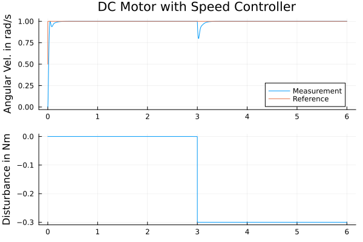

Controlling a DC Motor (E)
using ModelingToolkit
using ModelingToolkit: t_nounits as t, D_nounits as D
using DifferentialEquations, Plots, ControlSystemsBase
using OrdinaryDiffEqRosenbrock: Rodas4
using ModelingToolkitStandardLibrary.Electrical
using ModelingToolkitStandardLibrary.Mechanical.Rotational
using ModelingToolkitStandardLibrary.Blocks
# Motor parameters
R = 0.5 # [Ohm] armature resistance
L = 4.5e-3 # [H] armature inductance
k = 0.5 # [N.m/A] motor constant
J = 0.02 # [kg.m²] inertia
f = 0.01 # [N.m.s/rad] friction factor
# PI Controller parameters
pi_k = 1.1
pi_T = 0.05
tau_L_step = -0.3 # [N.m] amplitude of the load torque step
# Create motor components
@named ground = Ground()
@named source = Voltage()
@named R1 = Resistor(R = R)
@named L1 = Inductor(L = L)
@named emf = EMF(k = k)
@named fixed = Fixed()
@named load = Torque(use_support = false)
@named inertia = Inertia(J = J)
@named friction = Damper(d = f)
# Create controller components
@named ref = Blocks.Step(height = 1, start_time = 0)
@named pi_controller = Blocks.LimPI(k = pi_k, T = pi_T, u_max = 10, Ta = 0.035)
@named feedback = Blocks.Feedback()
@named load_step = Blocks.Step(height = tau_L_step, start_time = 3)
@named speed_sensor = SpeedSensor()
# Define all connections
eqs = [
# Motor electrical connections
connect(source.p, R1.p)
connect(R1.n, L1.p)
connect(L1.n, emf.p)
connect(emf.n, source.n, ground.g)
# Motor mechanical connections
connect(fixed.flange, emf.support, friction.flange_b)
connect(emf.flange, friction.flange_a, inertia.flange_a)
connect(inertia.flange_b, load.flange)
# Controller connections
connect(load.flange, speed_sensor.flange)
connect(ref.output, feedback.input1)
connect(speed_sensor.w, feedback.input2)
connect(load_step.output, load.tau)
connect(feedback.output, pi_controller.err_input)
connect(pi_controller.ctr_output, source.V)
]
# Create and compile the system
@named sys = System(eqs, t; systems=[
ground, source, R1, L1, emf, fixed, load, inertia, friction,
ref, pi_controller, feedback, load_step, speed_sensor
])
sys = mtkcompile(sys)
# Provide initial conditions to resolve cyclic guesses
u0 = [
L1.i => 0.0,
inertia.phi => 0.0,
inertia.w => 0.0,
]
prob = ODEProblem(sys, u0, (0, 6.0))
sol = solve(prob, Rodas4())
p1 = plot(sol.t, sol[inertia.w], ylabel = "Angular Vel. in rad/s",
label = "Measurement", title = "DC Motor with Speed Controller")
Plots.plot!(sol.t, sol[ref.output.u], label = "Reference")
p2 = plot(sol.t, sol[load.tau.u], ylabel = "Disturbance in Nm", label = "")
plot(p1, p2, layout = (2, 1))